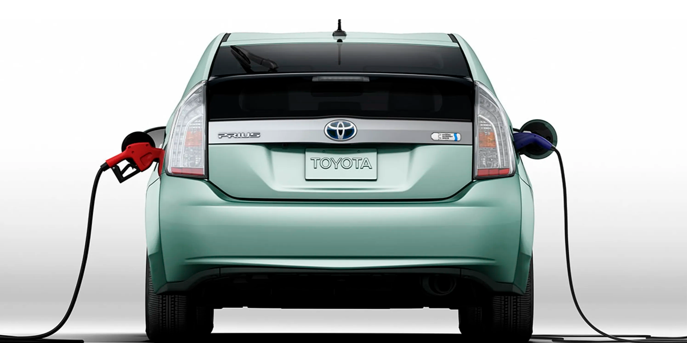

El auge de los coches híbridos ecológicos: un futuro verde sobre cuatro ruedas
 23 de noviembre de 2024
Juan Pérez
El ascenso de coches híbridos ecológicos está en marcha, con una conciencia cada vez mayor sobre la importancia de reducir las emisiones de gases de efecto invernadero y adoptar modos de transporte sostenibles. Estos vehículos innovadores combinan las ventajas de los motores eléctricos y tradicionales para ofrecer una solución más respetuosa con el medio ambiente.
En este artículo, exploraremos los beneficios ambientales, la tecnología subyacente, las iniciativas gubernamentales y las perspectivas futuras del automóvil. híbrido ecológico.
Impacto ambiental: Un paso adelante para el planeta
Los coches híbridos tienen varias ventajas medioambientales importantes sobre los vehículos tradicionales de gasolina o diésel.
Su capacidad para funcionar en modo eléctrico puro reduce significativamente su Emisiones de CO2 y otros contaminantes del aire.
Además, gracias a su sistema de recuperación de energía al frenar consumen menos combustible, contribuyendo así a reducir la dependencia de los combustibles fósiles.
El auge de los coches híbridos ecológicos marca un importante punto de inflexión en la industria del automóvil y la movilidad ecológica. Gracias a sus beneficios ambientales, tecnología innovadora e incentivos gubernamentales, estos vehículos contribuyen significativamente a la lucha contra cambio climático y construir un futuro más sostenible.
Entonces, ¿por qué no considerar un automóvil híbrido para su próxima compra? De este modo, hará un gesto concreto por nuestro planeta, mientras disfruta de una experiencia de conducción agradable y eficiente.